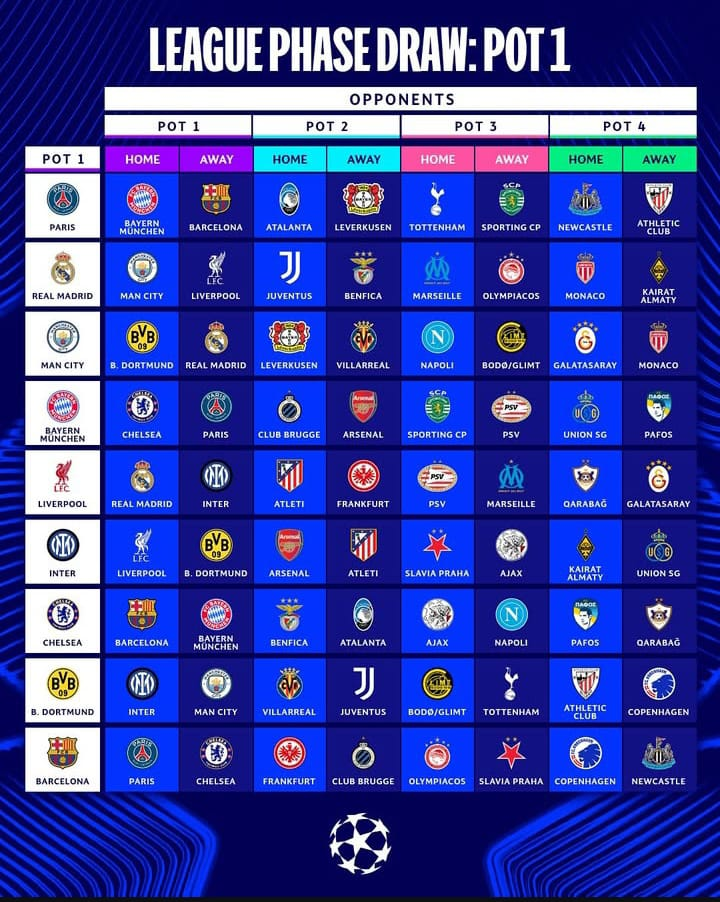

النتائج الكاملة لقرعة دوري ابطال اوروبا لكرة القدم 2025-2026
:جدول مباريات قرعة دوري ابطال اوروبا

.jpeg)
.jpeg)
.jpeg)
ريال مدريد
على ملعبه: مانشستر سيتي، مرسيليا، موناكو، يوفنتوس.
خارج ملعبه: ليفربول، أولمبياكوس، كيرات ألماتي، بنفيكا.
باريس سان جيرمان
على ملعبه: بايرن ميونخ، توتنهام، أتلانتا، نيوكاسل.
خارج ملعبه: برشلونة، سبورتينغ، ليفركوزن، بلباو.
مانشستر سيتي
على ملعبه: بوروسيا دورتموند، ليفركوزن، نابولي، غلطة سراي.
خارج ملعبه: ريال مدريد، بودو غيلمت، فياريال، موناكو.
انتر ميلان
على ملعبه: ليفربول، سلافيا براغ، كيرات ألماتي، أرسنال.
خارج ملعبه: بوروسيا دورتموند، أياكس، أتلتيكو مدريد، سان جيلواز.
بايرن ميونخ
على ملعبه: تشلسي، بروج، سبورتينغ، سان جيلواز.
خارج ملعبه: باريس سان جيرمان، أيندهوفن، بافوس، أرسنال.
برشلونة
على ملعبه: باريس سان جيرمان، فرانكوفرت، أولمبياكوس، كوبنهاغن.
خارج أرضه: تشلسي، بروج، سلافيا براغ، نيوكاسل.
أرسنال
على ملعبه: بايرن ميونخ، أولمبياكوس، أتلتيكو مدريد، كيرات ألماتي.
خارج أرضه: إنتر ميلان، سلافيا براغ، بروج، بلباو.
ليفربول،
على ملعبه: ريال مدريد، أتلتيكو مدريد، أيندهوفن، كاراباخ.
خارج ملعبه: إنتر ميلان، مرسيليا، غلطة سراي، فرانكفورت.
تشلسي،
على ملعبه: برشلونة، أياكس، بنفيكا، بافوس.
خارج ملعبه: بايرن ميونخ، نابولي، أتلانتا، كاراباخ.
بوروسيادورتمند
على ملعبه: إنتر ميلان، بودو غيلمت، بلباو، فياريال.
خارج ملعبه: مانشستر سيتي، توتنهام، يوفنتوس، كوبنهاغن